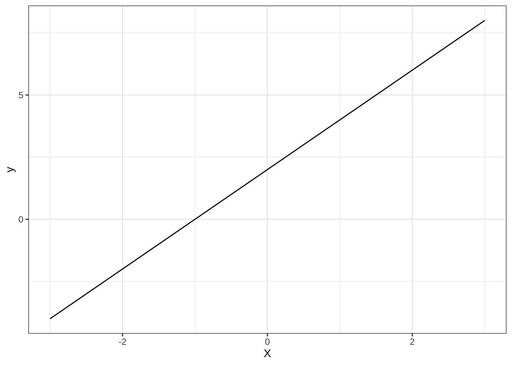
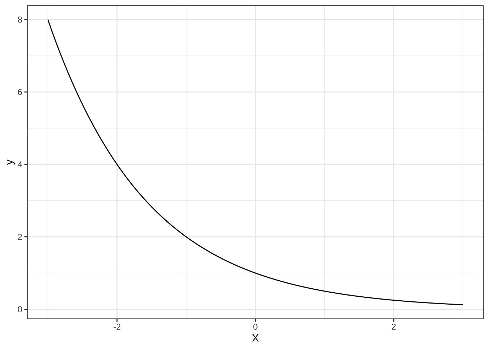
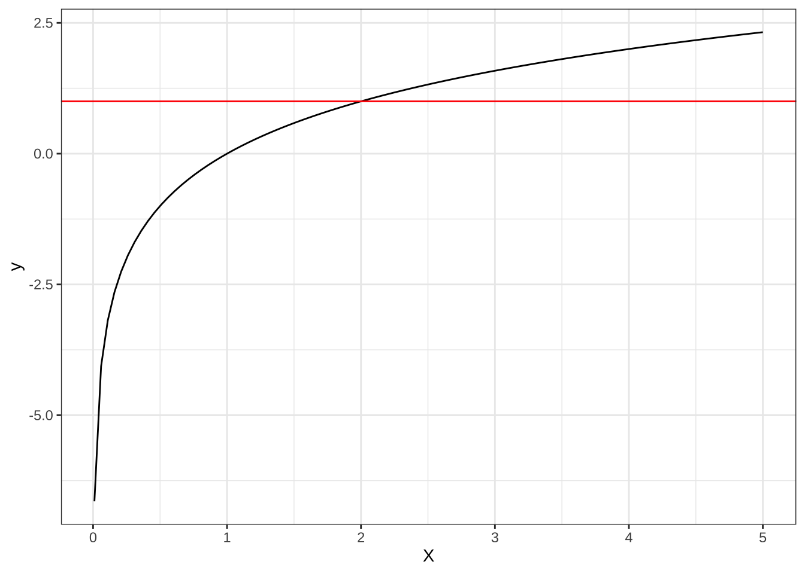

chapter: 11 グラフを書いてみよう・問題を解いてみよう
11.1 1. 基礎編
問１ \(-3<x<3\)の範囲において、以下の(1)式および(2)式のグラフをかけ。
(1). \(y=2x+2\)
# To plot functions without data, specify range of x-axis
base <-
ggplot() +
xlim(-3, 3)+
xlab("X")+
theme(axis.text = element_text(size=16),
axis.title=element_text(size=16))+
theme_bw()
base+stat_function(fun=function(x) 2*x+2)
(2). \(y=x^{2}+2\)

11.2 2. 応用編
問2 \(-3<x<3\)の範囲において、以下の(3)式、(4)式および(5)式のグラフをかけ
(3). \(y=2^{x}\)
(4). \(y=\left(\frac{1}{2}\right)^{x}\)

(5). \(y=\log_{2}x\)
## Warning in fun(x_trans): NaNs produced## Warning: Removed 50 rows containing missing values or values outside the scale range
## (`geom_function()`).ここで、NaNは、「Not a number」という意味で、「計算不可能な式の結果」を意味しています。高校の教科書で対数の定義を確認すると、\(a>0\)、\(a\neq 1\)の時、任意の正の整数\(M\)に対して、
\(a^p=M\)
となる実数\(p\)がただひとつ定まります。この\(p\)を\(a\)を底とする\(M\)の対数といい、
\(\log_a M\)
と書く、とされています。また、\(M\)をこの対数の真数と言いますが、対数の真数は、正の数となります。\(a\)が正の数である限りは、\(M\)が負になることはないのです。このことを踏まえて、\(x\)軸の範囲を変更して再度作図してみましょう。
base+xlim(0.01,5)+
stat_function(fun=function(x) log2(x))+
geom_abline(slope=0,intercept=1,color="red")## Scale for x is already present.
## Adding another scale for x, which will replace the existing scale.
対数関数はその性質上、\((1,0)\)を必ず通ります。また、上図の赤線は、\(y=1\)のグラフですが、この例の対数関数は、\(x=2\)でこの赤線と交わります。
11.3 3. 応用編
問3.1 \(-2 \leq x \leq 4\)の範囲において、(6)式の関数の最大値と最小値を求めよ。
(6). \(y=-2x^{3}+3x^{2}+12x\)
ggplot() +
xlab("X")+
theme(axis.text = element_text(size=16),
axis.title=element_text(size=16))+
xlim(-2,4)+
stat_function(fun=function(x) -2*x^3+3*x^2+12*x,
color="blue")+
geom_hline(yintercept=0)+
geom_vline(xintercept=0)+
geom_segment(aes(x=0,y=20,xend=2,yend=20),
color='red',linetype="dashed")+
geom_segment(aes(x=2,y=0,xend=2,yend=20),
color='red',linetype="dashed")+
geom_segment(aes(x=-1,y=0,xend=-1,yend=-7),
color='green',linetype="dashed")+
geom_segment(aes(x=0,y=-7,xend=-1,yend=-7),
color='green',linetype="dashed")+
geom_segment(aes(x=4,y=0,xend=4,yend=-32),
color='green',linetype="dashed")+
geom_segment(aes(x=0,y=-32,xend=4,yend=-32),
color='green',linetype="dashed")+
annotate("text",x=2,y=-1.3,label="2",size=5)+
annotate("text",x=-0.2,y=20,label="20",size=5)+
annotate("text",x=-1,y=1.3,label="-1",size=5)+
annotate("text",x=0.2,y=-7,label="-7",size=5)+
annotate("text",x=4,y=1.3,label="4",size=5)+
annotate("text",x=-0.2,y=-32,label="-32",size=5)+
theme_bw()\(y^\prime=-6x^2+6x+12=-6(x+1)(x-2)\)
つまり、\(y^\prime=0\)の時、\(x=-1,2\)である。増減表の代わりにグラフを見ると、この例の範囲では、極大値は最大値となっているが、極小値は最小値ではない。\(=2\)で最大値20、\(x=4\)で最小値-32となっている。
問3.2 次の二つの放物線で囲まれた図形の面積\(S\)を求めよ。
(7). \(y=x^{2}+2x-3 ~~~ \text{and} ~~~ y=-x^{2}+2x+3\)
ggplot() +
xlab("X")+
theme(axis.text = element_text(size=16),
axis.title=element_text(size=16))+
xlim(-4,4)+ylim(-5,5)+
stat_function(fun=function(x) -x^2+2*x+3,
color="blue")+
stat_function(fun=function(x) x^2+2*x-3,
color="lightblue")+
geom_hline(yintercept=0)+
geom_vline(xintercept=0)+
geom_segment(aes(x=sqrt(3),y=0,xend=sqrt(3),
yend=2*sqrt(3)),
color='red',linetype="dashed")+
geom_segment(aes(x=-sqrt(3),y=0,xend=-sqrt(3),
yend=-2*sqrt(3)),
color='red',linetype="dashed")+
annotate("text",x=3.2,y=0.5,label="3")+
annotate("text",x=-2.9,y=0.5,label="-3")+
annotate("text",x=sqrt(3),y=-0.8,
label=expression(sqrt(3)))+
annotate("text",x=-0.2,y=3.1,label="3")+
annotate("text",x=0.2,y=-3,label="-3")+
annotate("text",x=-sqrt(3),y=0.8,
label=expression(-sqrt(3)))+
theme_bw()２つの放物線は図のようになり、その交点の\(x\)座標は、
\(x^2+2x+3=-x^2+2x+3\)
を解くことで求められる。これを解くと、
\(2x^2-6=0\)
より、
\(x=\pm \sqrt(3)\)
よって、求める面積\(S\)は、
\(S=\int_{-\sqrt(3)}^{\sqrt(3)} \{(-x^2+2x+3)- (x^2+2x+3)\} dx=\large[6x-\frac{2}{3}x^3 \large]_{-\sqrt(3)}^{\sqrt(3)}=8\sqrt(3)\)